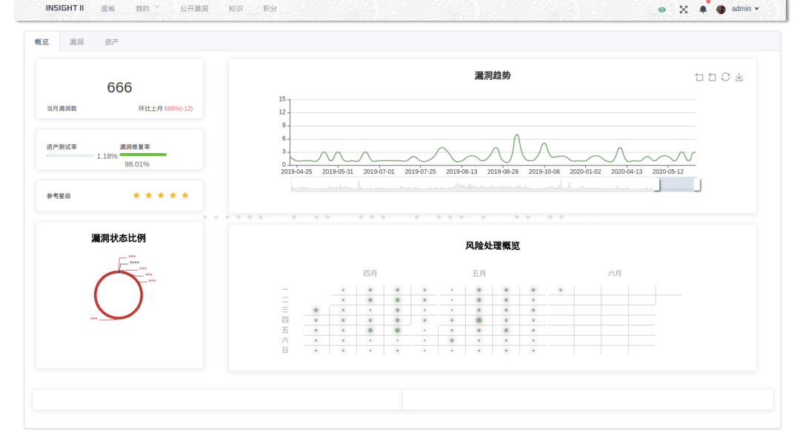
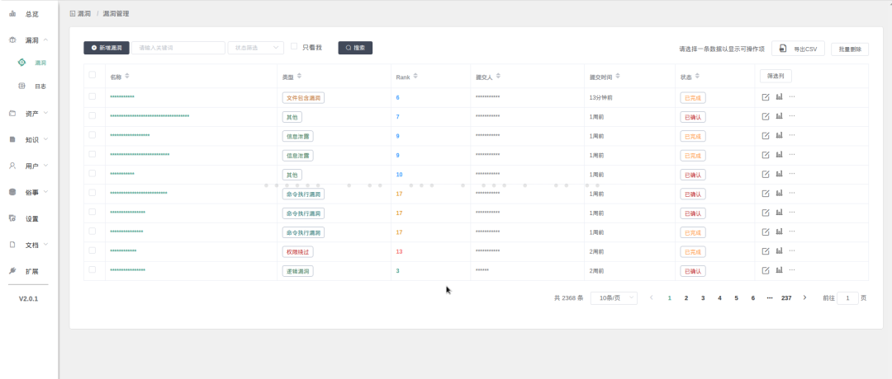
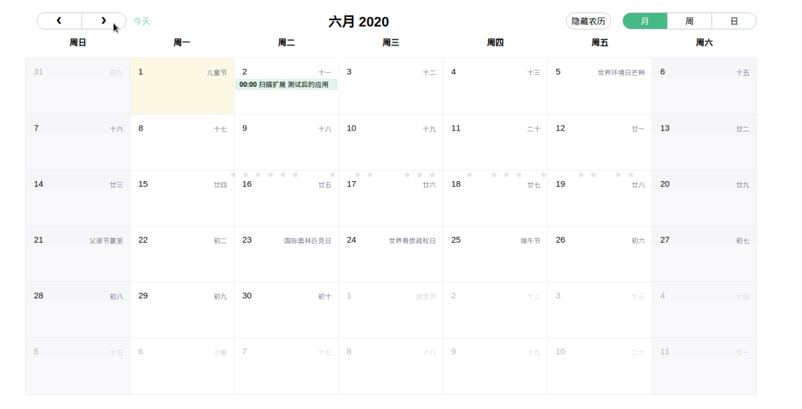

洞察 II
愿景：让用户快速方便快捷地进行风险管理 ，更加直观和实时地了解和处置安全隐患。
提升漏洞修复效率，同时进行安全风险管理功能联动。
1. 洞察是什么？
洞察由宜信安全部开发，集成应用系统资产管理、漏洞全生命周期管理、安全知识库管理三位一体的管理平台。
本次全新的洞察2.0版本，产品初衷让用户方便快捷地进行风险管理 ，更加直观和实时地了解和处置自己的安全隐患。提升漏洞修复效率，同时进行安全风险管理功能联动。
产品化繁为简，使用便携，才会让人更加专注。上手容易，才能令人由浅入深使用。功能简化，专业程度才会更强。大多数企业都有适合自己环境的安全平台，功能上想要面面俱到很难。
- 
- 
- 
2. 选择洞察2.0的理由
产品维度
- 开源免费!
- 帮助用户直观地了解安全风险情况
- 易于扩展，方便企业根据自身需求进行二次开发，上手和接入成本低。
技术维度：
- 易于集成到现有系统：前后端分离，文档完备，接口简单清晰，Restful API
- 同时支持Python2/3环境
- 部署简单，支持
docker compose一键构建
3. 技术架构
最NB的并不一定是最适合的，延续了1.0的风格，洞察2.0 依旧没有采用炫酷的UI和技术架构。
- 后端：Python，MySQL，Redis
- 前端：Vue全家桶
4. 适用人群
- 洞察1.0 的老朋友们！！！
- 对漏洞管理刚需但又迫于研发资源短缺的团队。
- 依赖安全风险管理的非盈利组织。
- 其他有安全风险管理需求或兴趣之人士。
欢迎安全小伙伴使用、交流、fork、star、转发。
也欢迎安全小伙伴在使用洞察过程中和我们多多交流，扫描下方二维码，关注宜信安全应急响应中心公众号，回复“自己的微信号+洞察”，我们的运营小姐姐会拉你进群讨论。